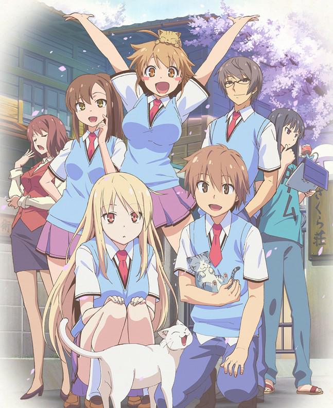

猪 页
ACG Sharing
Stein's Gate
这就是命运石之门的选择！
2男9女 无敌神作
What can I say?
Moshoku Tensei
Kansaku in Isekai Anime! ! !
第一次点开《无职转生》的动漫时，是它精美的画风和有趣的设定吸引了我。各式各样的魔法以及“无咏唱”的能力，丰富了这个剑与魔法的世界，洛琪希sensai的教导也给鲁迪和我留下了回忆与羁绊，邂逅希露菲，遇见放荡不羁的艾丽丝小姐，为鲁迪的人际关系奠定了基础。路上的旅途与见识使世界观更加清晰，人物性格刻画具体，更是体现了鲁迪一路上的成长，逐渐成熟。后面兽人族，甲龙王，给龙神打工的故事也都让我不禁感叹：这个世界真是庞大。
从鲁迪刚刚转生到结婚生子，再到衰老去世，《无职转生》细致地刻画了鲁迪的一生，描绘了这剑与魔法的世界，鲁迪一路上的成长激励人心，也让我看得热血澎湃，细细品味他的一生，我释怀而又欣慰。
葬送的芙莉莲
能种出花田的魔法ʕ•̀ω•́ʔ✧
“感到恐惧并不是坏事，是这份恐惧支撑我走到今天。”
“如果是勇者辛美尔的话，肯定也会这么做的。”
“短短十年，还不足我人生的百分之一。”
“也正是因为这百分之一才改变了你啊。”
“所谓活着，就是有人知道，并记得自己。”
“要怎么做才能被别人记得呢？”

樱花庄的宠物女孩
椎名真白😍😍😍
我也想住樱花庄😫我也想住樱花庄😫我也想住樱花庄😫我也想住樱花庄😫我也想住樱花庄😫我也想住樱花庄😫我也想住樱花庄😫我也想住樱花庄😫我也想住樱花庄😫我也想住樱花庄😫
Mashiro我老婆🥵Mashiro我老婆🥵Mashiro我老婆🥵Mashiro我老婆🥵Mashiro我老婆🥵Mashiro我老婆🥵Mashiro我老婆🥵Mashiro我老婆🥵Mashiro我老婆🥵Mashiro我老婆🥵Mashiro我老婆🥵Mashiro我老婆🥵Mashiro我老婆🥵Mashiro我老婆🥵Mashiro我老婆🥵Mashiro我老婆🥵
东京喰种
1000-7=？
错的不是我，错的是这个世界！
好中二啊kuso！
五等份的花嫁
三玖天下第一！！！
三玖win三玖win三玖win三玖win三玖win三玖win三玖win三玖win三玖win三玖win三玖win三玖win三玖win三玖win三玖win三玖win三玖win三玖win三玖win三玖win三玖win三玖win三玖win三玖win三玖win三玖win三玖win三玖win三玖win三玖win三玖win三玖win三玖win三玖win三玖win三玖win三玖win三玖win三玖win三玖win三玖win三玖win三玖win三玖win三玖win三玖win三玖win三玖win
四叶你补药赢啊四叶你补药赢啊四叶你补药赢啊四叶你补药赢啊四叶你补药赢啊四叶你补药赢啊四叶你补药赢啊四叶你补药赢啊四叶你补药赢啊四叶你补药赢啊四叶你补药赢啊四叶你补药赢啊四叶你补药赢啊四叶你补药赢啊四叶你补药赢啊四叶你补药赢啊四叶你补药赢啊四叶你补药赢啊
紫罗兰永恒花园
Violet Evergarden
《紫罗兰永恒花园》这是一部非常优秀的动漫，它不同于主流的热血动画，讲述冒险，探索，伙伴的故事。它的画面精良，作画优秀，剧情略带催泪但只要看过“京阿尼”系列的作品你会发现紫罗兰只是一个很普通很平凡的一部动漫。它讲述了一个人从不懂"爱”到理解“爱”最后到拥有”爱”的一个过程。它的每一集动画内容或许都没发生太大的变化，但它内容中的情感都是一集一集铺垫起来的，只有经历了过程再到故事的结尾只需要轻轻“一推”你的情绪就能排山倒海。这部作品我推荐给爱情，事业，生活不顺亦或者是迷茫的人认真观看此番。它或许真的能在无形中给你破烂不堪的灵魂上贴上补丁。